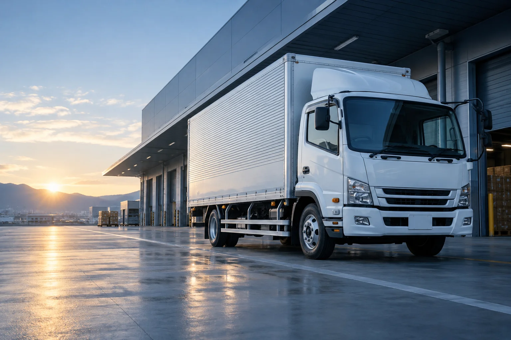

TRANSPORT
配送・輸送
荷物の種類とお届け先に合わせた、配送サービスの紹介。
対応エリア・車種は確認中
送り出す人にも、受け取る人にも。
物流は、日々の仕事をつなぐ大切な接点です。
何を、どこへ、いつ届けたいのか。
まずはお客様の状況を理解することから。
CPIが目指す、物流のあり方をご紹介します。
以下は事業紹介の構成案です。実際の提供サービス・対応条件は確認後に確定します。
TRANSPORT
荷物の種類とお届け先に合わせた、配送サービスの紹介。
対応エリア・車種は確認中REGULAR DELIVERY
決まったルートや日々の配送を支える、継続的な運行の紹介。
サービスの取扱いは確認中SPOT DELIVERY
必要なタイミングの配送について、ご相談いただくための窓口。
受付条件・対応可否は確認中速さだけでは語れない、物流の価値。
お客様の安心につながる姿勢を、
日々の仕事の真ん中に。
大切な荷物を預かる責任。安全への取り組みを、分かりやすくお伝えするための項目です。
集荷からお届けまで。ご相談や状況共有の方法を、事前にご案内します。
お客様の事業を理解し、必要な物流を一緒に考えるパートナーを目指します。
荷物・区間・ご希望の日程をお伺いします。
対応可否と必要な条件を確認します。
内容と費用をご確認いただきます。
合意した内容に沿って手配します。
LET’S CONNECT
お荷物の内容や配送についてのご相談を、
気軽にお寄せいただける窓口へ。
電話番号・メールアドレス・フォームの送信先は、正式情報の確認後に設定します。
この提案サイトから情報が送信されることはありません。